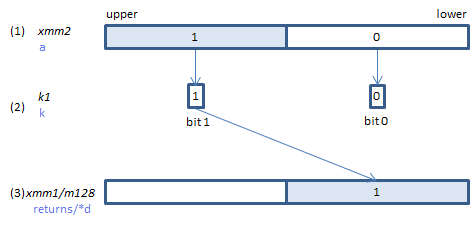
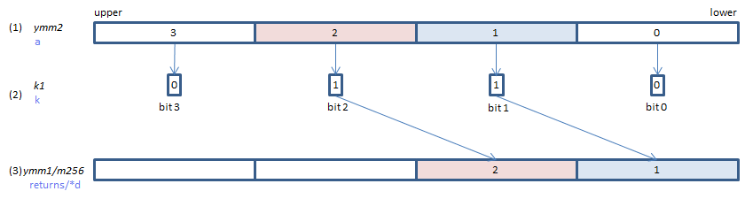

VCOMPRESSPD - COMPRESS Packed Double
VCOMPRESSPD xmm1/m128{k1}{z}, xmm2 (V5+VL
__m128d _mm_mask_compress_pd(__m128d s, __mmask8 k, __m128d a)
__m128d _mm_maskz_compress_pd(__mmask8 k, __m128d a)
void _mm_mask_compressstoreu_pd(void* d, __mmask8 k, __m128d a)

If each bit of (2) is set, the corresponding element of (1) is copied to (3), packed tightly from the lowest position.
If (3) is XMM register and {z} is specified (_maskz_ intrinsic used), upper elements of (3) are zero cleared.
If (3) is XMM register and {z} is not specified (_mask_ intrinsic used), upper elements of (3) are left unchanged (copied from s).
If (3) is memory (_compressstoreu_ intrinsic used) , upper elements of (3) are untouched.
VCOMPRESSPD ymm1/m256{k1}{z}, ymm2 (V5+VL
__m256d _mm256_mask_compress_pd(__m256d s, __mmask8 k, __m256d a)
__m256d _mm256_maskz_compress_pd(__mmask8 k, __m256d a)
void _mm256_mask_compressstoreu_pd(void* d, __mmask8 k, __m256d a)

If each bit of (2) is set, the corresponding element of (1) is copied to (3), packed tightly from the lowest position.
If (3) is YMM register and {z} is specified (_maskz_ intrinsic used), upper elements of (3) are zero cleared.
If (3) is YMM register and {z} is not specified (_mask_ intrinsic used), upper elements of (3) are left unchanged (copied from s).
If (3) is memory (_compressstoreu_ intrinsic used) , upper elements of (3) are untouched.
VCOMPRESSPD zmm1/m512{k1}{z}, zmm2 (V5
__m512d _mm512_mask_compress_pd(__m512d s, __mmask8 k, __m512d a)
__m512d _mm512_maskz_compress_pd(__mmask8 k, __m512d a)
void _mm512_mask_compressstoreu_pd(void* d, __mmask8 k, __m512d a)

If each bit of (2) is set, the corresponding element of (1) is copied to (3), packed tightly from the lowest position.
If (3) is ZMM register and {z} is specified (_maskz_ intrinsic used), upper elements of (3) are zero cleared.
If (3) is ZMM register and {z} is not specified (_mask_ intrinsic used), upper elements of (3) are left unchanged (copied from s).
If (3) is memory (_compressstoreu_ intrinsic used) , upper elements of (3) are untouched.
x86/x64 SIMD Instruction List
Feedback